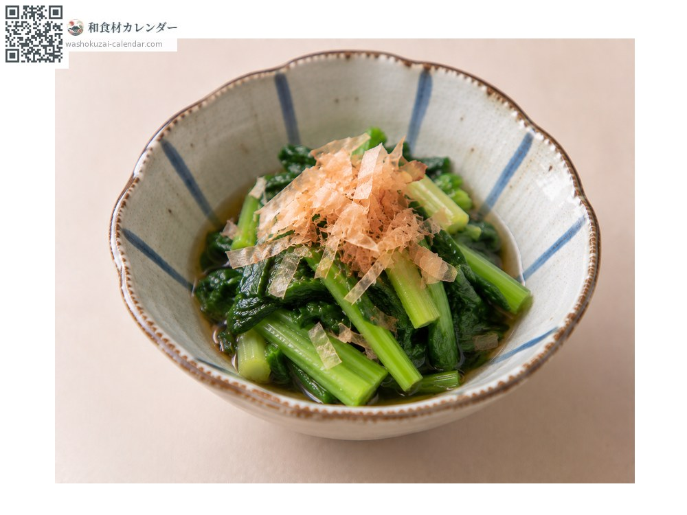
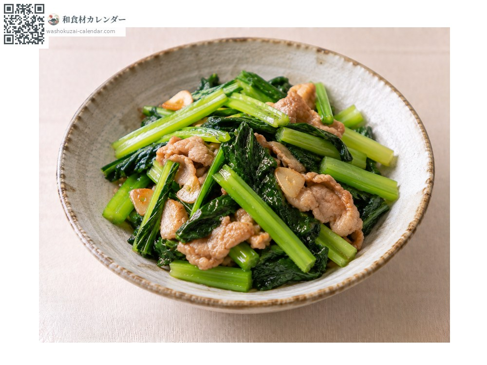
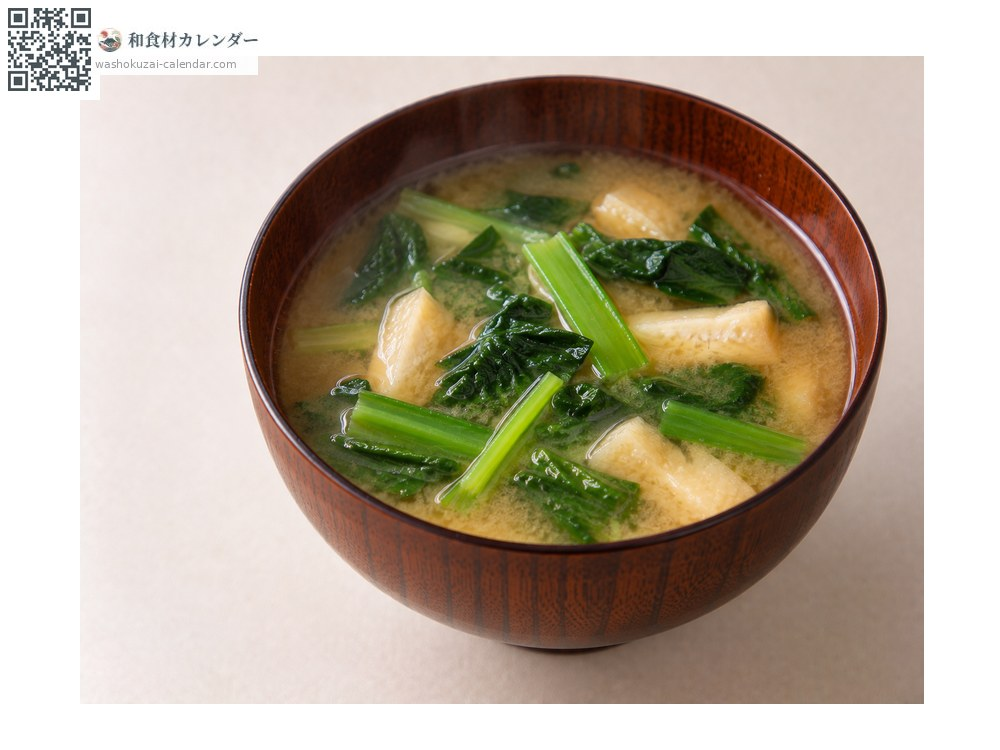
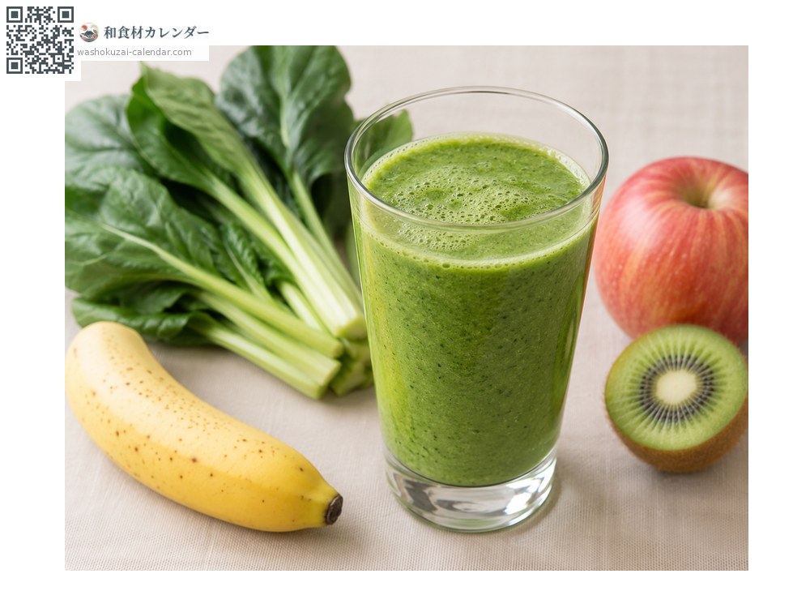

野菜
コマツナ
こまつな
別名・別表記小松菜、komatsuna
旬は1月・2月・12月

旬の時期
1月
2月
3月
4月
5月
6月
7月
8月
9月
10月
11月
12月
旬出回り
調理法

おひたし
アクが少なく下茹で不要。

炒め物
油揚げと合わせて。

味噌汁
具として。

スムージー
生でも使える。
選び方
葉が肉厚で色が濃く、茎がしっかりしているもの。しおれていないもの。
保存方法
濡らした新聞紙に包んで立てて冷蔵。2〜3日で使い切る。
主な産地
豆知識
ホウレンソウよりアクが少なく、下茹でなしで使える。名前は東京・小松川周辺の産地に由来する。